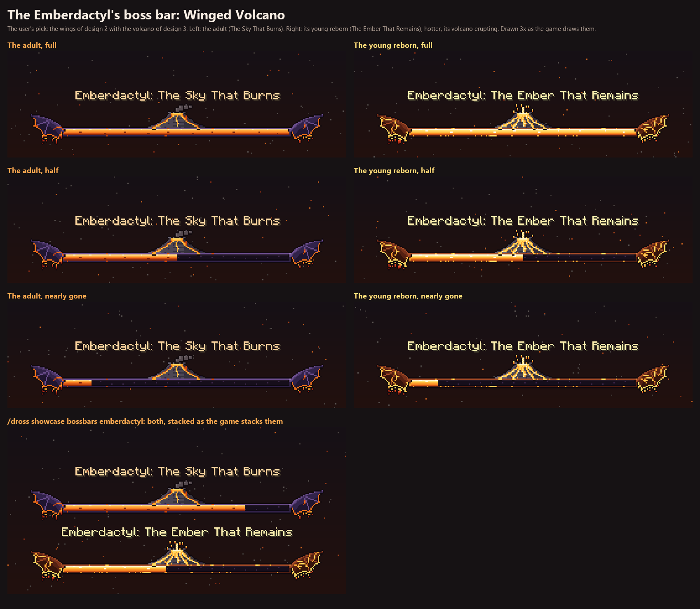

The user's pick (October 29, 2026: "combine the wings of 2 with the volcano of 3"): design 3's volcano on the middle of the bar (smoking for the adult, erupting for the young) and design 2's burning wings spread out from the bar's ends, their membranes glowing along their scalloped edges, fire falling from them. Two looks: the adult's, Emberdactyl: The Sky That Burns (obsidian wings and rails, the volcano smoking, a lava-orange fill), and its young reborn's, Emberdactyl: The Ember That Remains (hotter: magma crust split by lava veins, the volcano erupting, a white-hot fill). Drawn 3x, exactly as the game draws them. In the game: /dross showcase bossbars emberdactyl (both, stacked, for a minute) or the fight.
